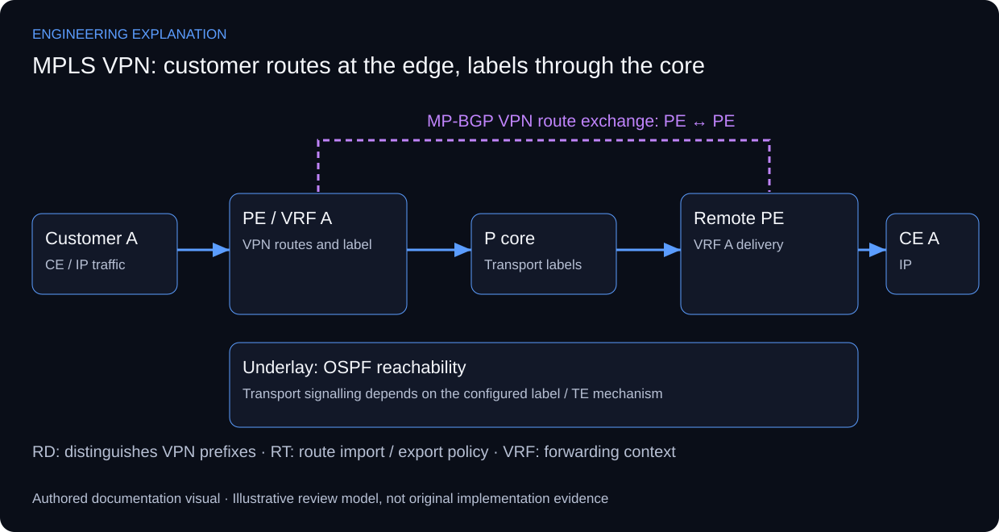

Service-provider Networks · MPLS
Network Infrastructure Design — MPLS Backbone
Built and validated a Cisco 7200 MPLS backbone in GNS3, using OSPF, MPLS traffic engineering, VRF/MPLS VPN and MP-BGP for multi-site connectivity.
Implemented Project
System architecture
Implementation scope
OSPF provides the routing underlay. MPLS carries labelled traffic, while VRFs separate customer routing contexts and MP-BGP exchanges VPN routes.
Understanding the underlay, VPN control plane and label path
The source documents a Cisco 7200 backbone built and validated in GNS3 using OSPF, MPLS traffic engineering, VRFs and MP-BGP. The original topology preview is preserved as the implementation environment. This is distinct from the enterprise/wireless projects; the backbone explanation should not imply that their equipment participates in the same network.
OSPF supplies reachability to backbone destinations. Label forwarding transports traffic through the provider core. PE routers maintain the customer VRFs and exchange VPN routes with MP-BGP; P routers provide core transport and need not carry the customer VPN routing tables. The diagram deliberately keeps the VPN control-plane responsibility at the PEs.
RFC 4364 separates the route distinguisher, which makes VPN routes distinct, from route targets, which influence import/export policy. A reference example with two isolated customer contexts can explain overlapping prefixes without claiming those exact customers or addresses existed in the source topology. RFC 3031 supports the distinction between label distribution/control and actual packet forwarding.
Verification should progress from underlay to transport labels, VPN route exchange and customer forwarding. Useful read-only IOS checks include show ip ospf neighbor, show mpls forwarding-table, show ip vrf and show ip bgp vpnv4 all; command support varies by image. LDP checks apply only when LDP is configured. A traffic-engineering path needs its own tunnel/signalling context and cannot be proved by an LDP neighbour table alone.

Review scenarios and expected evidence
These scenarios specify what evidence would support a review. They do not report additional completed tests.
| Review area | Method | Evidence to inspect |
|---|---|---|
| Underlay | Inspect OSPF adjacency and PE reachability | Reachable VPN next hop |
| Label transport | Inspect forwarding entries and applicable signalling | Label path to the remote PE |
| VPN routes | Inspect VPNv4 routes and RT policy | Intended routes imported into the intended VRF |
| Customer forwarding | Test same-VPN and disallowed cross-VPN paths | Reachability and isolation checked independently |
Technical references and provenance
Primary references support the engineering explanation, not claims about this project's undocumented configuration or results.
Command names are a verification guide. No console outputs, configuration exports, router identifiers or acceptance results have been invented.
Engineering approach
The GNS3 topology is the source visual for this implementation. The explanatory diagram shows functional boundaries rather than inventing router names, addresses or measured throughput.
Source context
Original project posters and interface screenshots are identified separately from explanatory source diagrams. The gallery documents this project only. Open any figure to inspect it at full available resolution.
Verification context
The functional diagram explains this implementation’s engineering responsibilities. The original source preview appears above. As-built addressing, configuration exports and raw acceptance records are not included in the public release.
Detailed verification boundaries and technical source context